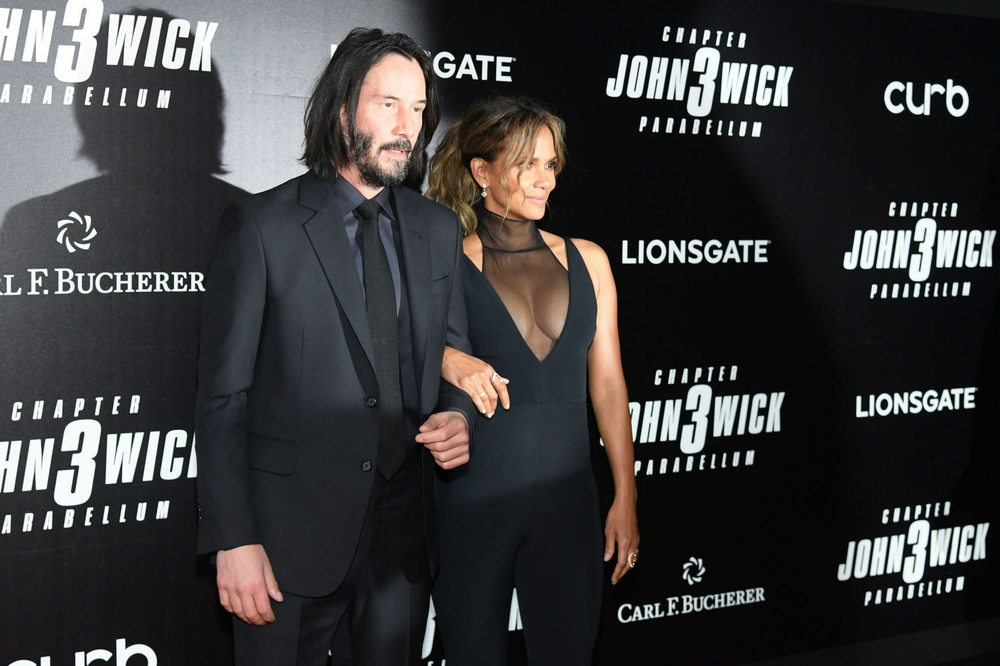
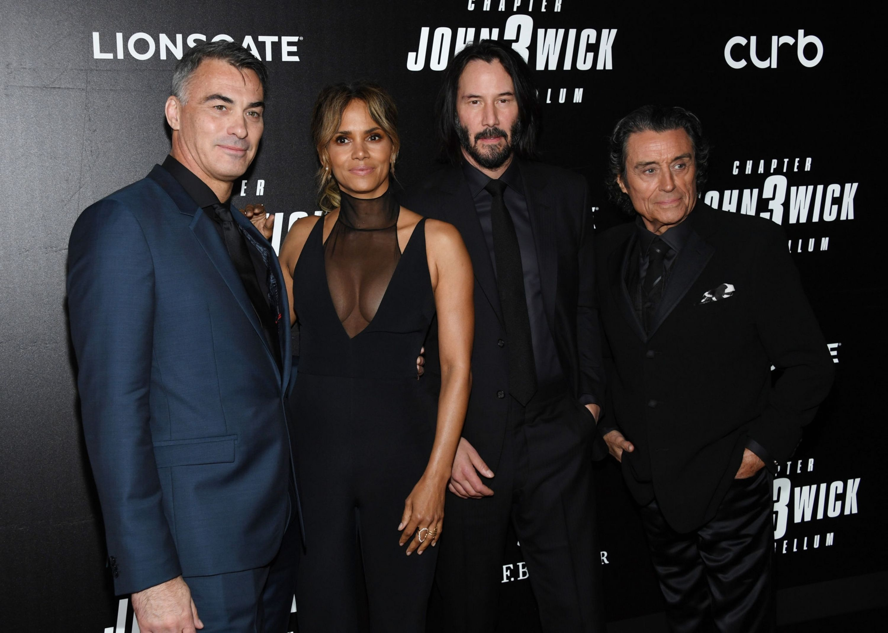
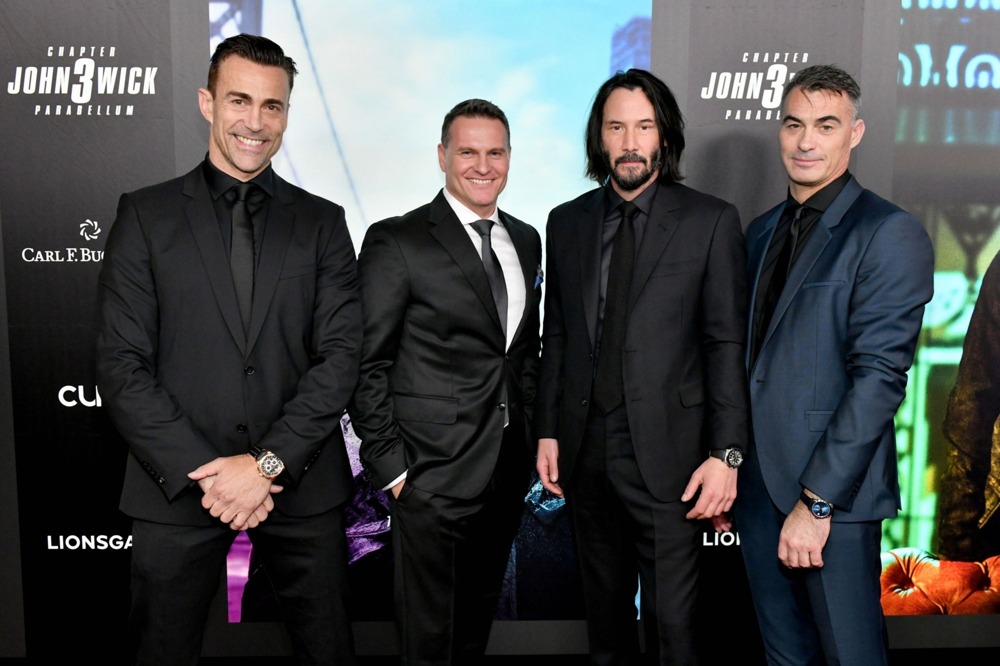
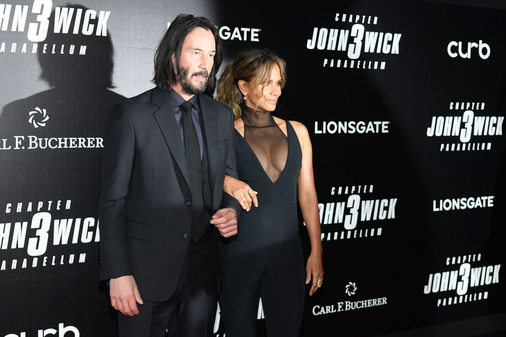
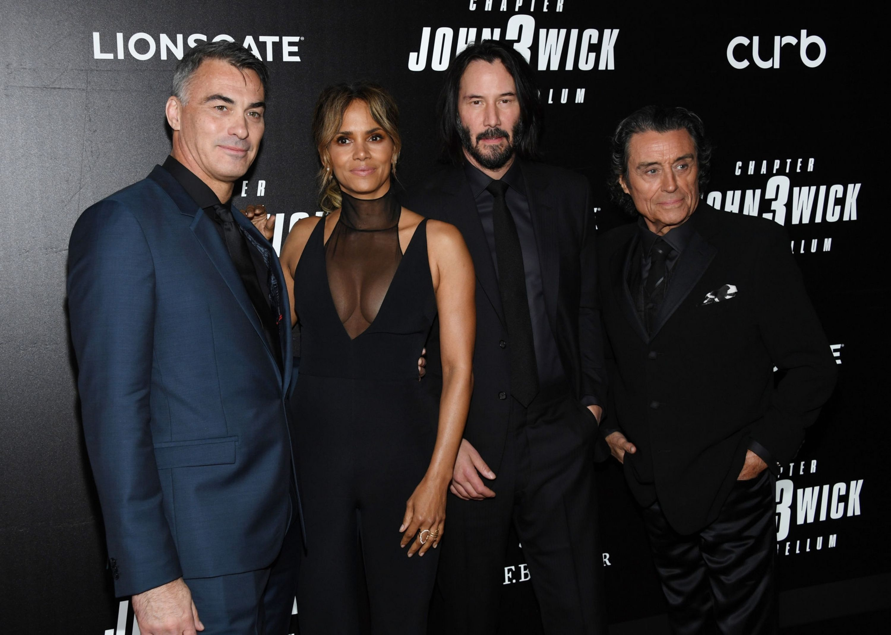
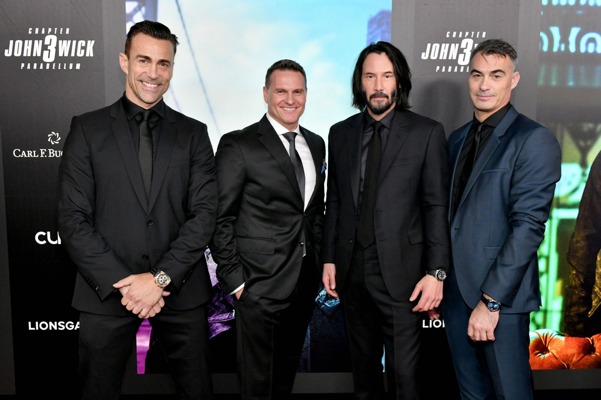
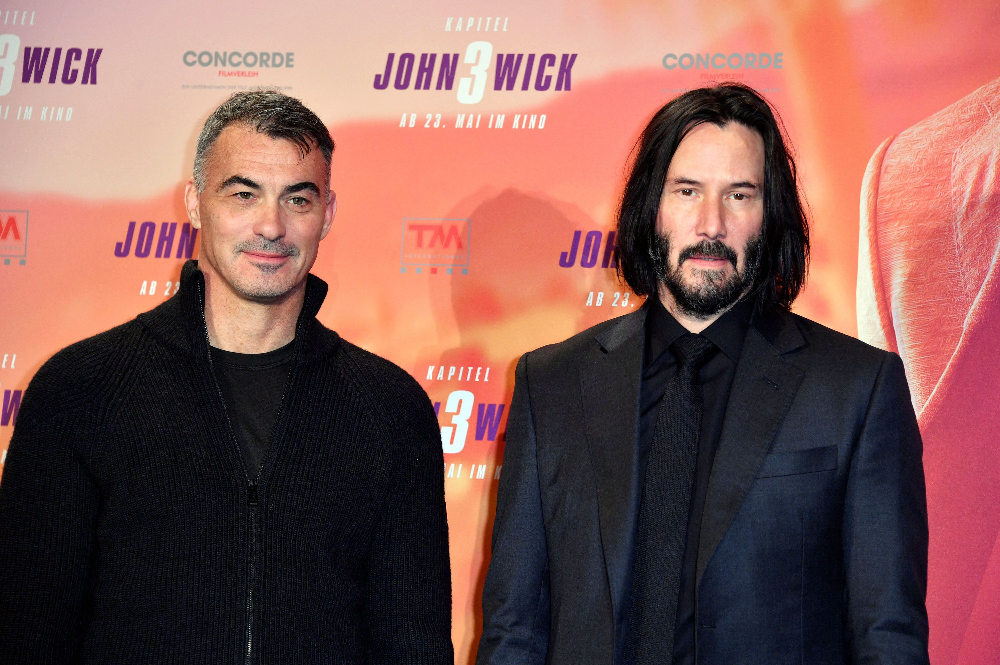
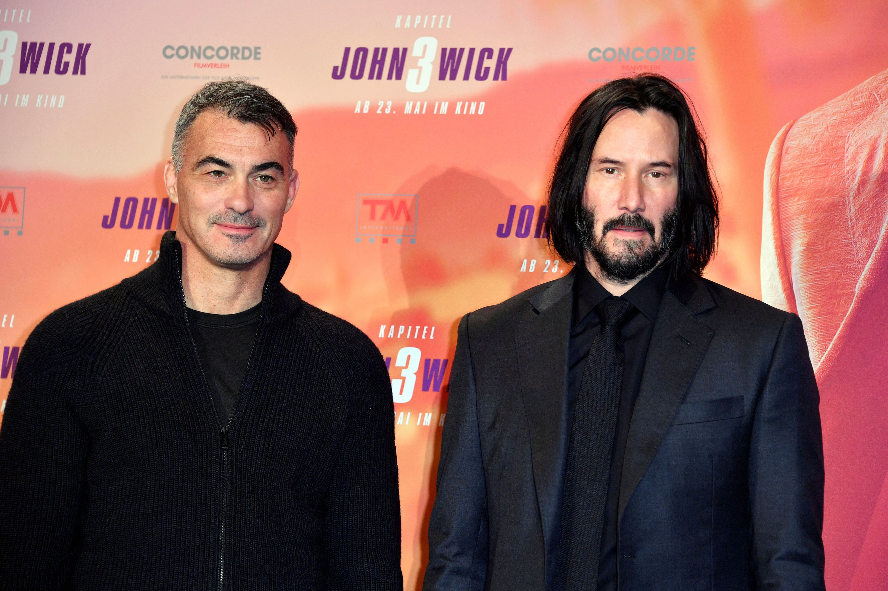

May 9th | John Wick - Chapter 3 Parabellum - World Premiere
With summer movie season now in full swing, the cast and crew of the highly anticipated John Wick: Chapter 3—Parabellum gathered in Brooklyn Thursday night for the world premiere screening.
“It’s so beautiful looking and really incredibly well choreographed,” says Anjelica Huston, who makes her John Wick series debut in the new film, opening this Friday. “It’s astonishing what these people do! And there’s very little CGI because Keanu [Reeves] does about 98 percent of his stunts; it’s really incredible to watch him go through these movies.”
After the screening, everyone was shuttled from the theater to a venue decked out to resemble the sinister Continental Hotel. Housed at One Hanson Place in the heart of Downtown Brooklyn, the after-party was an immersive event set in the real interior shooting location. Hotel staff and characters from the movie were even present, interacting with guests and dispensing souvenir gold coins used in the films as currency for services in the criminal underworld. The notoriously shy Reeves mingled with guests as ABBA played from the DJ booth, with cocktails being slung out at a rapid pace and the occasional interruption from a classical ballet performance on the balcony of the “hotel.” But given the “more is more” mentality at the heart of the John Wick films, the evening felt like an especially fitting celebration.
- Keaton Bell | May 13, 2019
 





 
